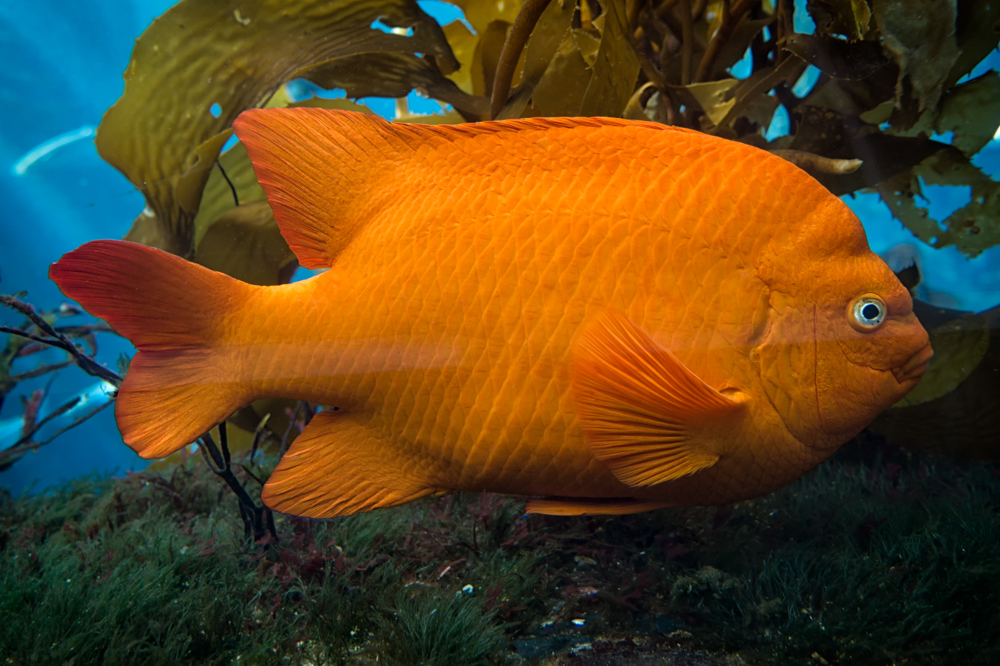

go to page 2
go to page 1
This is page three
This page will be about fishing
My favorite types of fish
- Trout
- Bass
- Tuna
- Catfish
- Walleye
- panfish
info
Fishing has been a source of food for centuries, some people fish for fun, while others fish competitivly.
Some of the most popular places to fish are in the mountains.
My favorite places to fish
- Bingham lake, Castle Rock, CO
- The small pond near the grange
- Bear Lake in Estes park
- Anywhere in the mountains
- Palmer lake
I like to fish for bass because they are big and also pretty
My favorite Species of fish

Photo by unknown From wikipedia commons
Garibaldi
- Garibaldi
- Rainbow Trout
- Calico Sea Bass
- Largemouth Bass
- Yellow Fin Tuna
- Brown Trout
- Smallmouth Bass
- Brook Trout
- Spotted Bass
- Striped Bass
- Bluegill
- Sunfish
- Red Snapper
- Catfish
- Goldfish
- Sturgeon